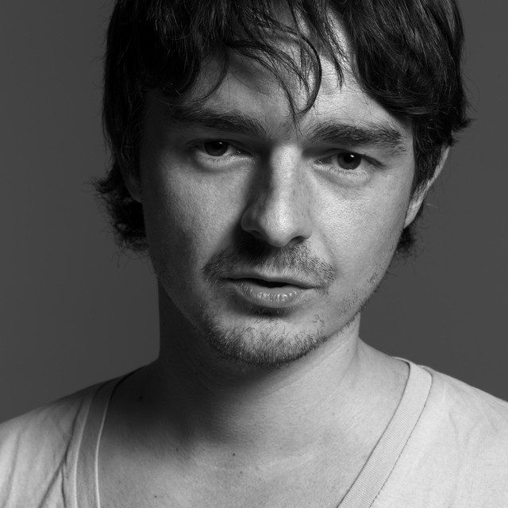

Paolo Mojo [Audio]: Renaissance's digital man


STREAMING AUDIO INTERVIEW
Regarded as one of the house and progressive scene’s rising stars, after impressing clubbers on his tour last year for ‘Balance 009’, he’s back this month for another jaunt across the country, all on the back of a new digital release mix compilation for Renaissance.
Paolo has been doing his thing for a number of years, but his unique DJing style was brought to the attention of a whole bunch of new faces last year when he released his installment in the famed Balance series. His sound is difficult to pin down, but takes in house in all of its different variations, with a broad ‘progressive’ thread holding it all together. He’s definitely among the nu-breed of house stars.
Picked by Renaissance to launch a new series of digital only mix releases, Paolo will be jetting around the country in July to aide its launch. ITM’s Angus Paterson recently caught up with the UK native to talk shop.
Don’t miss Paolo Mojo in Australia for Renaissance this July:
Sat 7th Jul – Famous, Sydney
Fri 13th Jul – The Lounge, Adelaide
Sat 14th Jul – Famous, Melbourne
Sun 15th Jul – The Bedroom, Gold Coast